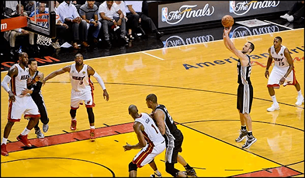

Attention Under Pressure
Why do skilled performers — athletes, surgeons, musicians — sometimes fall apart at the worst possible moment? This final lesson is about choking: what pressure does to attention, and why “don’t mess up” is the worst thing you can tell someone.
These interactive lessons were built by Dr. Kuznetsov using AI tools, with extensive input from and review by the instructor, who is responsible for their content and accuracy.
Learning objectives
You should be able to:
- 1Define choking under pressure and recognize it in sport, clinical, and everyday settings.
- 2Compare the three main explanations — arousal/narrowing, distraction, and explicit monitoring — and say which kind of task and performer each one fits.
- 3Explain ironic effects and why “don’t” instructions backfire under load.
- 4Reword an avoidant cue into a positive, do-this instruction.
Choking under pressure
Choking is performing worse than your usual level because of pressure — not from fatigue or lack of skill, but from the situation itself. The free throw with the game on the line, the recital piece you’ve played a hundred times, the practical exam — or a procedure you’ve done dozens of times, now with an attending watching.

Choking is strange: the more skilled and well-practiced you are, the more there is to lose — and some kinds of choking hit experts hardest. To understand it, we need to ask what pressure does to attention.
Beilock, S. L., & Gray, R. (2007). Why do athletes choke under pressure? In Handbook of Sport Psychology (3rd ed., pp. 425–444).
Think of your own choke
Almost everyone has a story — a performance, a test, a presentation, a game, a procedure in clinic — where you did worse because it mattered.
Bring one to mind. In the moment, which of these felt truer?
“My mind went blank — I was worrying and couldn’t hold it together.”
“I was thinking too hard about every step of something I normally just do.”
Hold onto that. Those two experiences point to two different mechanisms — and there’s a third. Let’s sort them out.
Three mechanisms
All three start the same way — under pressure, attention narrows. They differ in what it narrows onto, and that changes who gets hurt. Click each to open it.
Easterbrook (1959) doi:10.1037/h0047707 · Eysenck, Derakshan, Santos, & Calvo (2007) doi:10.1037/1528-3542.7.2.336 · Masters (1992) doi:10.1111/j.2044-8295.1992.tb02446.x · Beilock & Carr (2001) doi:10.1037/0096-3445.130.4.701
Same narrowing, different target
The common thread: under pressure, attention narrows. The three accounts simply disagree about where it narrows onto — and that tells you who is most at risk.
- AArousal/narrowing → onto too few cues → hurts open, cue-rich tasks. (Weak spot: it can’t explain why experts choke on a free throw, where there are few cues to miss.)
- DDistraction → onto worry → hurts novices and decision-heavy tasks.
- MExplicit monitoring → onto your own body → hurts experts’ automatic skills.
Match the fix to the cause: for a monitoring choke on an automatic skill, push attention outward (an external focus, a hum, a routine). For a distraction choke, reduce worry and protect working memory. The wrong fix can make it worse.
Ironic effects: “Don’t…!”
Quick demo: for the next few seconds, do not think of a white bear.
…how did that go? Trying not to think of something makes it pop up more. The same thing happens with movement: trying not to do something can make it more likely — especially under pressure or mental load. This is the ironic effect (Wegner, 1994).
Controlling your mind runs two processes: one that pursues what you want, and a monitor that scans for the thing to avoid. Under load, the pursuing process weakens but the monitor keeps running — so it keeps priming the very thing you’re trying to prevent.
Now let’s look at how this plays out in real movement:
- →Golfers told “don’t overshoot” overshot more under mental load (Wegner, Ansfield, & Pilloff, 1998).
- →Penalty takers told not to shoot near the keeper looked at, and shot toward, the keeper more often (Bakker et al., 2006).
Wegner (1994). Psychol. Review, 101(1), 34–52. doi:10.1037/0033-295X.101.1.34 · Wegner, Ansfield, & Pilloff (1998). Psychol. Science, 9(3), 196–199. doi:10.1111/1467-9280.00037 · Bakker et al. (2006). Int. J. Sport Psychol., 37, 265–280.
Say what to do, not what to avoid
The practical rule follows directly: give a positive, do-this cue that aims attention at the goal, not at the thing to dodge. Each card shows a common “don’t” cue — flip it for a better version.
Same rule for patient cueing: “don’t let your heel drop” becomes “lift your toes toward your shin.” Tell the patient what to do — and, from Lesson 4, aim it at an external target when you can.
Attention: key takeaways
You’ve reached the end of the Attention unit. Here’s the through-line, lesson by lesson:
- L1Attention is a limited resource; tasks interfere most when they compete for the same resources. Arousal raises capacity up to a point — beyond it, attention narrows and cues are lost.
- L2Dual-task cost is a simple, clinically useful measure of how much attention a task demands.
- L3Practice makes skills automatic — which changes whether attending to technique helps or hurts.
- L4An external focus usually helps (constrained-action), but the best focus can depend on the learner’s skill level.
- L5Under pressure, attention narrows — and “don’t” instructions can backfire. Say what to do instead.
Your passphrase for this lesson is CLUTCH. Enter it in the Canvas quiz to record completion — and that’s a wrap on the Attention unit. Nice work.